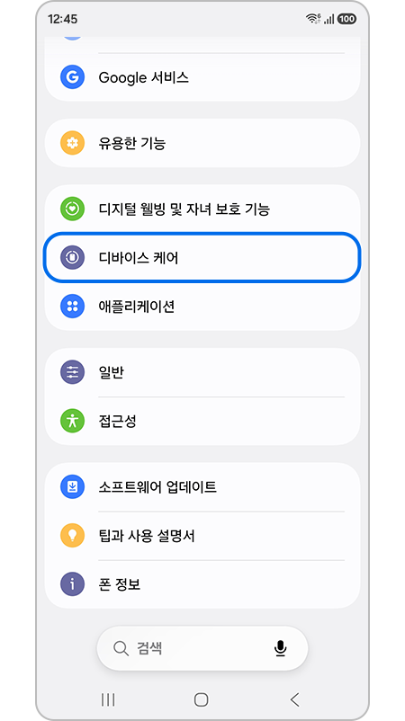
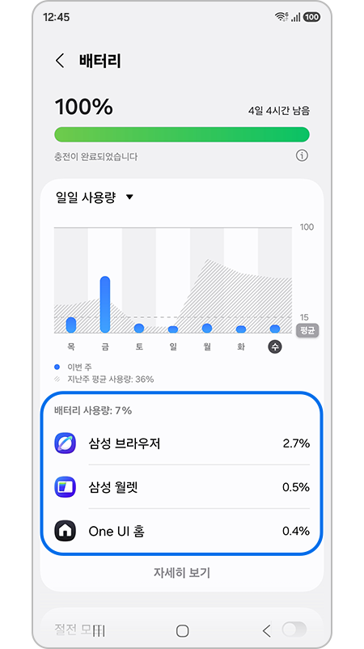

갤럭시 배터리 빨리 닳을 때, 삼성 공식 점검 3단계
다른 날보다 배터리가 유독 빨리 준다고 느껴질 때 있으시죠? 충전한 지 얼마 안 됐는데 갑자기 훅 떨어지는 느낌이 들 때도 있고요. 그런 분들을 위해 삼성전자 서비스 공식 문서를 확인해서 확인 순서를 정리해봤어요.
확인 순서는 크게 세 단계예요. 배터리 최적화 기능부터 켜고, 디스플레이 설정을 손보면 돼요. 그래도 그대로면 배터리 상태를 직접 진단해보면 돼요. 삼성전자 서비스 공식 문서가 안내하는 절차가 이 순서예요.
이 글은 2026년 8월 2일 기준으로, 삼성전자 서비스 공식 문서를 확인해 정리했어요.
갤럭시 배터리가 빨리 닳는 이유는 뭔가요?
앱을 여러 개 동시에 쓰거나 자동 동기화·Wi-Fi·블루투스·GPS를 켜두면 배터리가 빨리 줄어들 수 있어요.
삼성전자 서비스 공식 문서가 밝힌 원인은 이렇게 정리돼요.
- 여러 앱을 동시에 실행하는 경우
- 고해상도·고성능을 요구하는 게임이나 앱을 실행하는 경우
- 자동 동기화를 켜둔 경우
- Wi-Fi·블루투스·GPS를 켜둔 채로 쓰는 경우
여기에 하나 더 있어요. 제품을 새로 산 직후에는 배터리 사용 패턴을 학습하는 기간이 있어요. 이 기간엔 배터리 소모가 빠르게 느껴질 수 있다고 공식 문서에 적혀 있어요.
One UI 업데이트가 원인이라는 이야기도 종종 보여요. 다만 이 부분은 삼성전자 공식 문서가 확인해준 적이 없어요. 공식 근거가 있는 원인은 위에 정리한 항목들뿐이에요.
1단계, 배터리 최적화 기능부터 켜보세요
배터리 최적화 기능을 켜면 여러 앱·고성능 게임을 쓸 때도 배터리 소모를 줄일 수 있어요.
삼성전자 서비스 공식 문서가 안내하는 절차는 다음과 같아요.
- 알림창을 아래로 내려 설정 앱으로 들어갑니다.
- 디바이스 케어를 선택합니다.
- 배터리 메뉴로 들어갑니다.
- 앱별 배터리 사용 관리 메뉴를 확인합니다.
- 배터리 최적화 기능을 켭니다.

설정 앱 안에서 디바이스 케어 메뉴로 들어가는 화면이에요. 삼성 공식 갤럭시 배터리 지원 페이지에 실린 예시 화면이에요.
이미지 출처: Samsung 대한민국 — Galaxy Battery 배터리 사용 시간 최적화

배터리 화면에서 앱별 사용량을 확인할 수 있는 예시 화면이에요. 이 화면으로 배터리를 많이 쓰는 앱을 확인할 수 있어요.
이미지 출처: Samsung 대한민국 — Galaxy Battery 배터리 사용 시간 최적화
2단계, 디스플레이 설정을 바꿔보세요
디스플레이 설정을 바꾸면 배터리 사용 시간을 조금 더 늘릴 수 있어요.
절차는 이래요.
- 알림창을 내려 설정 앱으로 들어갑니다.
- 디스플레이 메뉴를 선택합니다.
- 부드러운 모션 및 화면 전환 항목을 찾습니다.
- 일반을 선택합니다.
- 적용을 누릅니다.
| 항목 | 내용 |
|---|---|
| 메뉴 위치 | 설정 > 디스플레이 > 부드러운 모션 및 화면 전환 |
| 선택할 값 | 일반 |
| 기대 효과 | 배터리 사용 시간을 조금 더 늘릴 수 있음 |
3단계, Samsung Members로 배터리 상태를 점검하세요
Samsung Members 앱 폰케어 기능으로 배터리 상태를 직접 점검할 수 있어요.
확인 절차는 이래요.
- Samsung Members 앱을 실행합니다.
- 하단의 도움 받기를 누릅니다.
- 폰케어 항목 중 인터렉티브 진단을 선택합니다.
- 배터리 항목을 확인합니다.
정확한 메뉴 이름은 삼성전자 서비스 공식 문서에 적힌 대로 인터렉티브 진단이에요.
이 과정을 마치면 배터리의 진단 결과가 화면에 표시돼요.
Samsung Members 앱의 자가진단 기능을 소개하는 삼성 공식 이미지예요. 화면 속 UI는 글로벌 버전이라 국내 앱 화면과 표기가 다를 수 있어요.
이미지 출처: Samsung 대한민국 — 삼성 멤버스 앱 소개
삼성전자 서비스 공식 문서에는 이렇게 적혀 있어요. “진단결과 “나쁨” 으로 표시 될 경우는 가까운 서비스센터에 방문하여 점검을 받으시기 바랍니다.” (삼성전자 서비스 공식 문서, 2026.08.02 기준)
1~3단계를 다 해봐도 여전히 빨리 닳는다면요?
3단계에서 확인한 인터렉티브 진단 결과를 기준으로 판단하면 돼요.
나쁨으로 나왔다면 위에서 정리한 대로 가까운 서비스센터를 방문하는 게 가장 정확해요. 나쁨이 아닌데도 여전히 빨리 준다고 느껴질 수 있어요. 그럴 땐 1단계와 2단계에서 다룬 설정을 다시 한번 점검해보시는 것도 방법이에요.
| 진단 결과 | 다음 조치 |
|---|---|
| 나쁨 | 가까운 서비스센터 방문 |
| 나쁨 아님 | 1단계·2단계 설정 재점검 |
자주 묻는 질문
Q. 이 점검 순서는 언제 기준인가요?
위에서 정리한 순서의 출처인 삼성전자 서비스 문서는 게시일이 2020년 11월 19일이에요. 그래서 내 폰 화면의 메뉴 이름이나 위치가 글과 다르게 보일 수도 있어요. 그럴 땐 아래 참고한 곳의 공식 문서를 직접 열어 최신 안내를 확인하시는 게 가장 정확해요.
Q. 서비스센터를 바로 가기는 어려운데, 다른 방법은 없나요?
같은 공식 문서 하단에서 세 가지 경로를 함께 안내하고 있어요. 모바일센터 예약, AI CS Bot 상담, 전화상담 예약이에요. 방문 전에 상담으로 먼저 확인해보고 싶다면 이 경로를 쓰시면 돼요.
Q. 진단 결과가 나쁨이 아니면 어떻게 하나요?
공식 문서가 조치를 안내하는 건 나쁨으로 나온 경우뿐이에요. 그 외 결과에 대한 별도 안내는 없어서, 지금 할 수 있는 건 위 1·2단계를 다시 짚어보는 정도예요.
참고한 곳
· 삼성전자 서비스 — [갤럭시 스마트폰] 배터리 소모 빠르거나, 급 방전이 되는 경우 확인해 보세요
· Samsung 대한민국 — Galaxy Battery 배터리 사용 시간 최적화
· Samsung 대한민국 — 삼성 멤버스 앱 소개
하루 정리
· 배터리가 갑자기 빨리 닳을 땐 여러 앱 동시 실행·고성능 게임·자동 동기화·Wi-Fi·블루투스·GPS 상시 사용을 먼저 의심해볼 수 있어요.
· 확인 순서는 배터리 최적화 → 디스플레이 설정 → Samsung Members 인터렉티브 진단, 이렇게 세 단계예요.
· 진단 결과가 나쁨으로 나오면 가까운 서비스센터를 찾는 게 가장 정확해요.
나쁨이 아닌데도 계속 빨리 준다면, 1~2단계 설정을 다시 점검해보시는 게 먼저예요.